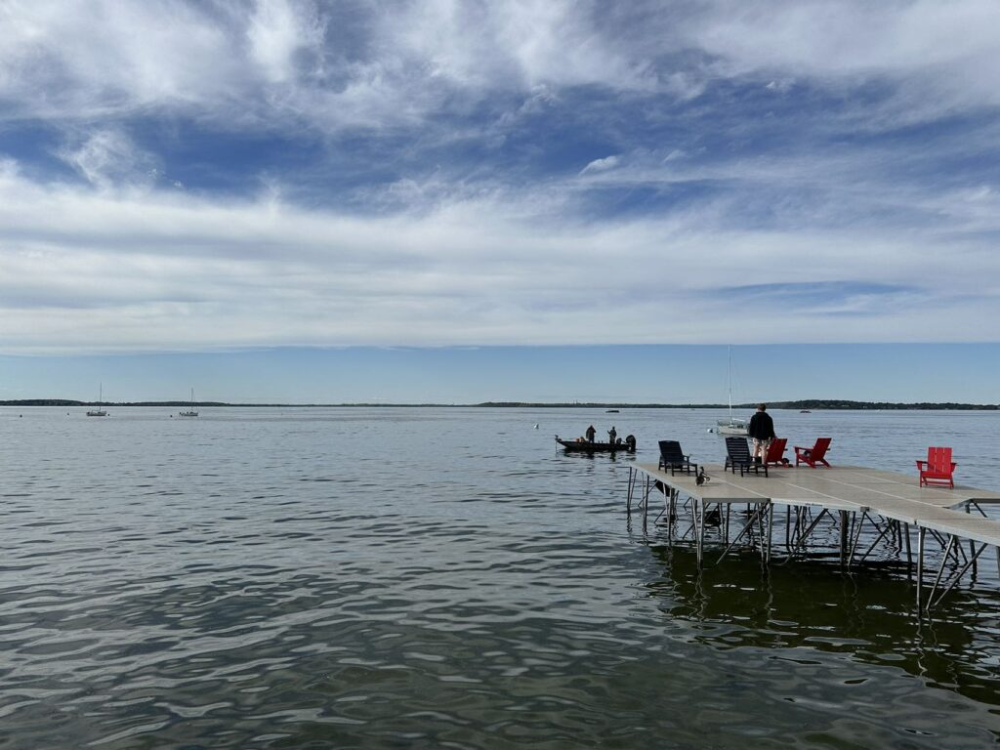

Hello! I am Zechen Zhao, and I am a junior majoring in Computer Science at UW-Madison.
Fishing is one of my absolute favorite ways to unwind. There's just something about being out by the water, casting a line, and waiting for a bite that feels so peaceful. I love the calmness of nature and the thrill when I finally reel in a fish. It's not just about the catch; it's about enjoying the moment and escaping from the daily grind.
When I'm not fishing, you'll probably find me on the tennis court. I love playing tennis because it's fast-paced and keeps me on my toes. Whether I'm having a friendly match with friends or just practicing my serve, it's always a blast. It's a great way to stay active, have fun, and connect with people who share the same enthusiasm for the game.